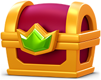
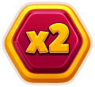
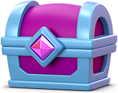
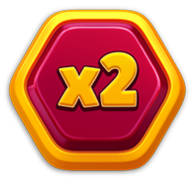
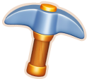
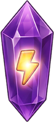
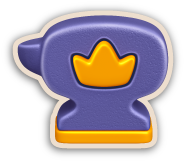
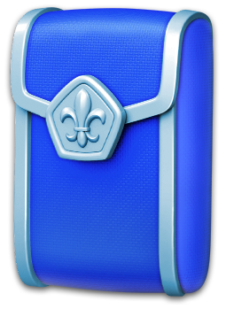
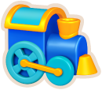

Trang chủ › Thể loại: Live-ops
Thể loại: Live-ops
59 trang

Ghi và phát lại ván đấu
Công cụ nội bộ ghi lại seed, nhịp từng khung hình và mọi thao tác của một ván, rồi phát lại chính xác để dựng lại bug.
🔓 Không có UI người chơi – chỉ chạy khi RecordManager/ReplayManager được đăng ký vào LevelContext (build nội bộ, suy luận)
7 use case · 14 config
Định dạng file level
Mỗi màn Royal Match là một file FlatBuffers nhị phân với root table FTiledLevel gồm 55 field mô tả trọn vẹn thiết kế bàn cờ.
🔓 Level 1
10 use case · 77 config

Cửa hàng và mua hàng (Shop)
Hệ thống bán hàng ba lớp: 157 sản phẩm IAP, chiến lược giá theo segment và Coin Shop đổi coin lấy vật phẩm.
🔓 Shop có từ đầu game; Coin Shop Level 100; thông báo thanh toán ngoài Level 52; Royal Boost bundle Level 50
17 use case · 220 config · 4 ảnh
Dynamic Offer (offer động)
Gói bán do server định nghĩa hoàn toàn bằng asset bundle, chia 7 nhóm giá theo segment người chơi mà không cần cập nhật app.
🔓 Theo từng offer: minLevel + minPlayerDays (server)
12 use case · 21 config

Journey Offer (thang tiến độ)
Gói ưu đãi dạng pass thu nhỏ: mua một lần, rồi thắng level để mở dần từng mốc thưởng trong đợt event.
🔓 Level 100 (kèm điều kiện tải xong nhóm bundle 'journey_offer')
13 use case · 32 config
Ladder Offer (thang mua)
Chuỗi gói mua nối tiếp: mua bậc dưới mới mở bậc trên, giá trị tăng dần tới các bậc Super, Mega, Ultra và Grand.
🔓 Level 35 (kèm bundle đã tải và không bị backend tắt)
12 use case · 101 config

Multiplier Token (Royal Boost)
Đồng xu tiêu hao: mỗi lần vào level tiêu 1 token để nhân hệ số thưởng sự kiện của level đó.
🔓 Level 33 (kiểm tra bằng level > 32), bundle 'multiplier_token' đã tải và MultiplierSelection không active; chỉ nhóm AB 2/3 (hoặc nhóm V2 2/3) mới dùng được token, nhóm AB 4 chỉ thay thưởng Madness
14 use case · 29 config
Offer theo segment
Gói bán theo segment người chơi: thang nhiều bước, mua bước trước mở bước sau, mỗi đợt kéo dài 48 giờ.
🔓 Level 100 (bundle bắt đầu tải từ level 95)
14 use case · 32 config · 1 ảnh
Quà quay lại (Welcome Back)
Gói quà và nước thưởng dành cho người chơi quay lại sau ít nhất 15 ngày ngừng chơi, chia làm ba bậc.
🔓 Level 20 (MinimumLevel) và nghỉ tối thiểu 15 ngày (MinimumDayDifference)
10 use case · 22 config

Team Gift Offer (quà cho đội)
Gói IAP xã hội: mua Gold, Silver hoặc Bronze để nhận quà riêng và tặng Unlimited Lives cho toàn bộ thành viên trong đội.
🔓 Level 24 (và phải đang ở trong một đội - User.HasTeam)
10 use case · 24 config

Daily Rewards
Quà đăng nhập mỗi ngày với hai chuỗi song song: chuỗi tuần 7 ngày và chuỗi tháng 30 ngày, bỏ lỡ một ngày là mất chuỗi.
🔓 Level 21 (cần user config hợp lệ, cùng event với server, không bị backend tắt)
20 use case · 30 config

Khu trang trí (Areas)
Trục tiến trình chính của Royal Match: mỗi level thắng cho 1 sao, sao dùng để xây từng món trang trí trong lâu đài.
🔓 Có từ đầu game; dialog Area tự mở lần đầu ở Level 11 (HomeTutorialManager.AutoShowAreaDialogLevel)
15 use case · 190 config · 3 ảnh

King's Workshop (Table Game)
Mini game merge-drop: thả bình gốm xuống bàn, hợp nhất hai bình cùng bậc để làm đủ đơn hàng nhà vua yêu cầu.
🔓 Không mở theo level - bật qua AB test (AbTestHelper.IsTableGameAbEnabled) và deferred deep link 'tablegame_onelink'; màn đầu tiên chèn tại Level 5
13 use case · 22 config
Level tái kích hoạt
Bộ level dễ hơn được thay ngầm cho người chơi quay lại sau thời gian nghỉ, vẫn giữ nguyên số level trên bản đồ.
🔓 Level 232 (0xe8) trở lên, sau khi nhận Welcome Back Gift (MinReactivationLevel = 231)
10 use case · 17 config
Độ khó level (Difficulty)
Hệ thống độ khó hai lớp: level x2/x5/x9 khó cố định từ level 111, cộng điều chỉnh số nước theo số lần thua.
🔓 Level 111 (ExtremeLevelsManager.UnlockLevel = 110); giao diện level khó xuất hiện sớm hơn từ level 39
14 use case · 82 config

Ancient Adventure
Sự kiện solo bước trên cột đá giữa hồ: thắng level thì lên một bậc, thua thì cột chìm xuống.
🔓 Level 66 (AncientAdventureManager.UnlockLevel)
17 use case · 44 config
Archery Arena
Sự kiện xếp hạng theo nhóm: thu bia bắn trong level, điểm được nhân theo chuỗi thắng 5 bậc, thua là mất sạch hệ số.
🔓 Level 55 (UnlockLevel const) — thấy icon từ level 56, tham gia từ level 57
20 use case · 35 config

Balloon Rise
Sự kiện solo kiểu thang bậc có streak: thắng level để đẩy khinh khí cầu leo 10 bậc, thua thì mất bóng bay.
🔓 Level 39
22 use case · 57 config

Book of Treasure (BoT)
Sự kiện solo 25 bước: thu vật phẩm trong level để lấp thanh tiến độ và mở 3 rương thưởng lớn.
🔓 Level 28
12 use case · 54 config

Clash of Champions
Giải đấu loại trực tiếp 1-vs-1 gồm 3 vòng, thi điểm bằng cách phá viên và combo trong level match-3.
🔓 Level 96
21 use case · 51 config

Daily Lightning Rush
Sự kiện đua điểm hằng ngày: ghép nhóm tối đa 5 người, thu tia sét trong 30 phút, xếp hạng cao hơn nhận thưởng lớn hơn.
🔓 Level 31 (Level > 30) + server có event hợp lệ và người chơi còn level để chơi
22 use case · 53 config
Dragon Nest
Sự kiện hợp tác cặp đôi: ghép cặp với tối đa 4 người bạn, ném Dragon Ball vào bàn pinball để cùng nuôi rồng.
🔓 Level 75 (cần tải xong bundle và khung hồ sơ riêng của event)
22 use case · 44 config

Duke's Fortune
Sự kiện máy quay slot 3 cột: thu Fortune Token trong level, đặt cược quay máy lấy điểm và mở 30 mốc thưởng.
🔓 Level 86 (UnlockLevel), cần tải xong bundle và server đang bật event
22 use case · 44 config

Hidden Temple
Sự kiện đào kho báu kiểu Battleship: gom cuốc trong level, đào lưới cổng đền để lộ đá quý và mở 5 cổng.
🔓 Level 39 (UnlockLevel = 39, cần tải xong nhóm bundle 'hidden_temple')
22 use case · 54 config
Khung sự kiện (Events)
Hệ thống điều phối 45 loại sự kiện của Royal Match: chia nhóm, khóa và sắp xếp icon để màn Home không bị ngập.
🔓 Level 5 (dưới level 5 không hiện icon sự kiện nào — EventLockManager.MinLevelToShowIcons); mỗi sự kiện con có UnlockLevel riêng (ví dụ TeamBattle 22, LavaQuest 66, MissionControl 101)
25 use case · 76 config
King's Cup
Giải đua xếp hạng theo nhóm: thắng level để thu cúp, TOP 10 khi giải kết thúc nhận thưởng booster và Unlimited Lives.
🔓 Level 25 (KingsCupManager.UnlockLevel)
20 use case · 25 config

Kings Tales (Expedition)
Sự kiện solo trên bản đồ bị mây che: thắng level lấy tinh thể năng lượng để dọn chướng ngại và mở đường cho Vua.
🔓 Level 76 (ShortExpeditionEventManager.UnlockLevel / GetUnlockLevel)
16 use case · 63 config
Lava Quest
Sự kiện sinh tồn có đếm ngược: thắng 7 level liên tiếp để leo hết bậc thang giữa biển dung nham, thua một level là bị loại.
🔓 Level 66 (LavaQuestManager.UnlockLevel) + server phải có event đang chạy
19 use case · 49 config

Magic Cauldron
Sự kiện giải mã công thức thuốc kiểu Mastermind: dùng elixir nhặt trong level để đoán đúng hàng lọ màu qua 12 stage.
🔓 Level 39
22 use case · 51 config

Merge Smith
Sự kiện solo ghép đồ trong lò rèn: thu anvil từ level match-3, đặt lên lưới và ghép qua 12 bước để nhận thưởng.
🔓 Level 86 (cần server đang chạy event, bundle 'merge_smith' đã tải, AB MergeSmith bật)
16 use case · 48 config
Mission Control (MCo)
Sự kiện nhiệm vụ cho người chơi cấp cao: 4 giai đoạn, 16 nhiệm vụ, 4 rương và một Grand Prize.
🔓 Level 101 (cần server có event đang chạy, tải xong bundle 'mission_control' + 'mission_events_common', không bị DisabledByBackend)
20 use case · 60 config
Mission Pursuit
Sự kiện nhiệm vụ 5 stage: hoàn thành nhiệm vụ để gom kính lúp và mở 3 rương thưởng booster.
🔓 Level 101
20 use case · 30 config

Ocean Odyssey
Mini-game bắn súng thần: thắng level match-3 để gom đạn, rồi bắn phá vật cản trên biển qua 20 màn tới Grand Prize.
🔓 Level 86 (cần server đang chạy event, bundle và toàn bộ màn chơi đã tải xong từ CDN)
18 use case · 67 config
Pinata Party
Sự kiện solo có thời hạn: nhặt kẹo trong level, đủ mốc thì đập piñata nhận coin, unlimited lives và booster.
🔓 Level 39 (icon dạng khóa có thể hiện sớm tối đa 4 level)
20 use case · 44 config

Propeller Madness
Sự kiện thanh tiến độ 20 bước: nổ Propeller trong level để tự động nhận thưởng, không cần bấm claim.
🔓 Level 28
20 use case · 49 config
Propeller Rush
Sự kiện đua ngắn 20 hoặc 30 phút mỗi bước, ghép nhóm tối đa 5 người, ai tạo nhiều chong chóng nhất thì hạng cao.
🔓 Level 96 (PropellerRushManager.UnlockLevel)
18 use case · 52 config
Puzzle Break
Mini-game xếp hình solo: thắng level để nhặt mảnh ghép, xếp kín từng bức tranh để mở rương thưởng và thẻ vàng.
🔓 Level 39
17 use case · 52 config

Robot Rivals
Sự kiện đấu tay đôi 1 vs 1: thắng level để thu đạn, bắn hạ robot đối thủ qua 3 bước thưởng tăng dần.
🔓 Level 51 (RobotRivalsManager.UnlockLevel / GetUnlockLevel)
18 use case · 54 config

Royal Pass
Battle pass thu chìa khoá qua mỗi level thắng, mở 32 mốc thưởng hai nhánh miễn phí và Gold, kết bằng két vàng 5000 coin.
🔓 Level 37 (RoyalPassUnlockLevel = 37; IsIconActive kiểm tra Level > 36)
22 use case · 50 config
Royal World Cup
Sự kiện World Cup theo quốc gia: chọn 1 trong 100 nước, thu golden ball qua các level và đấu loại tới trận chung kết.
🔓 Level 60 (cần server bật event, tải đủ 5 bundle, đã chọn quốc gia)
17 use case · 66 config
Sky Race
Cuộc đua vượt level giữa 5 người chơi: ai vượt đủ 15 level trước sẽ về nhất, TOP 3 nhận thưởng booster.
🔓 Level 51 (EntranceLevel)
21 use case · 23 config
Space Mission
Cuộc đua chuỗi thắng liên tiếp giữa một nhóm người chơi: ai đạt mục tiêu trước sẽ ẵm trọn phần thưởng của bước đó.
🔓 Level 51
22 use case · 28 config

Sưu tập thẻ mùa
Hệ thống sưu tập thẻ chạy xuyên suốt game: mở gói thẻ, hoàn thành set, đổi thẻ trùng lấy sao và nhận huy hiệu hồ sơ.
🔓 Level 41 (bundle art bắt đầu tải từ Level 31)
21 use case · 90 config · 1 ảnh
Team Battle
Sự kiện đội-đội: các thành viên góp khiên bằng cách thắng level, đội xếp hạng trong nhóm và nhận Coins theo hạng.
🔓 Level 22 (cần đang ở trong một đội và được server ghép nhóm)
14 use case · 26 config
Team Tournament
Giải đấu giữa các đội: mỗi thành viên thu lance khi thắng level, ghi điểm cho cả bảng cá nhân lẫn bảng xếp hạng đội.
🔓 Level 23 (và phải ở trong đội có tối thiểu 10 thành viên)
22 use case · 28 config
Team Treasure
Sự kiện hợp tác theo đội: cả đội cùng thu bánh xe để mở 3 rương chung, TOP 3 người đóng góp nhận thêm booster.
🔓 Level 23 (phải đang ở trong một đội)
20 use case · 28 config
Train Journey
Sự kiện hợp tác: mời tối đa 3 bạn, dùng vé quay board cho đoàn tàu chạy, gộp điểm cặp để mở 3 đoạn ray thưởng.
🔓 Level 75 (cần server có event đang chạy, tải xong bundle nhóm 'train_journey'; TryEnterEvent còn kiểm tra User.HasTeam, và có đội mới phát được lời mời cả đội)
20 use case · 81 config
Weekly Leaderboard
Đua vượt level trong tuần với một nhóm người chơi; kết thúc tuần TOP 3 nhận gói booster.
🔓 Level 47 (WeeklyLeaderboardManager.UnlockLevel)
20 use case · 30 config

Weekly Pass
Pass rút gọn chạy theo tuần với 9 mốc chìa khóa, hai nhánh thưởng miễn phí và Gold, kết thúc bằng két vàng 5000 coin.
🔓 Level 37
20 use case · 27 config
Bảng xếp hạng (Leaderboard)
Khu vực xã hội gồm 4 tab: so hạng theo Level với bạn bè, người cùng khu vực, thế giới và các đội, cộng thêm bảng thi đua theo tuần có thưởng top 3.
🔓 Không có level riêng cho section; tab Weekly cần Level 47, tab Teams cần vào đội (Level 21), tab Friends cần có bạn bè
12 use case · 25 config · 3 ảnh
Hồ sơ (Profile)
Trang cá nhân với 5 loại cosmetic — avatar, khung, tên kiểu, huy hiệu và theme — hiện ở chat, bảng xếp hạng và thẻ hồ sơ.
🔓 Có sẵn từ đầu (không có unlock level); tutorial hiện một lần (TryShowTutorial / SetTutorialIsSeen)
15 use case · 31 config · 1 ảnh
Mời bạn (Invite Friends)
Chia sẻ link mời bạn cài game; bạn mới chơi tới level 20 thì cả hai cùng nhận thưởng — người được mời nhận 1 PL + 1 IG, người mời tiến một bước trong thang 11 mốc.
🔓 Level 80 (phía người mời); người được mời không cần level
14 use case · 61 config
Đội (Team)
Hệ thống đội mở từ level 21, nơi người chơi chat, xin/tặng mạng, tặng thẻ và cùng tham gia mọi sự kiện nhóm.
🔓 Level 21 (MinLevelToJoinTeam)
17 use case · 25 config · 1 ảnh
Analytics - đo lường sự kiện
Hệ thống đo lường nội bộ của Dream Games, ghi 206 tên sự kiện với 565 tham số rồi gửi theo lô lên máy chủ.
🔓 Chạy từ khi mở app - không yêu cầu level
20 use case · 38 config
Live-ops & cấu hình từ xa
Tầng vận hành từ xa gồm 7 cơ chế giúp đổi hành vi game và phát nội dung mà không cần cập nhật app.
🔓 Không có mốc level – chạy từ khi mở app
17 use case · 41 config
Thông báo (Notifications)
Hệ thống nhắc nhở hai lớp: thông báo cục bộ lên lịch khi thoát app và push từ server nhắm mục tiêu bằng tag người chơi.
🔓 Luôn có (xin quyền ở phiên đầu SessionCount == 1, hoặc sau khi ConsentState == 1)
17 use case · 26 config
Cài đặt (Settings)
Popup bánh răng gồm 5 công tắc âm thanh/gợi ý/thông báo/rung, khối xã hội, hỗ trợ, kiểm soát phụ huynh và điều khoản & quyền riêng tư.
🔓 Luôn có (không yêu cầu level); công tắc Rung chỉ hiện khi thiết bị hỗ trợ
17 use case · 21 config · 2 ảnh
Màn hình Home (Home UI)
Hub trung tâm của Royal Match: 5 section vuốt ngang, nút Play, nút Tasks/League và hai cột icon sự kiện – offer.
🔓 Luôn có (section Card Collection cần SeasonalCardCollection mở – Level 41; nút Royal League cần User.IsInLeague – Level 1000+)
16 use case · 19 config · 2 ảnh
Tài khoản (Account)
Hệ thống danh tính người chơi: chơi ngay bằng tài khoản tạm, liên kết mạng xã hội sau, server quyết định tài khoản và đồng bộ toàn bộ tiến độ.
🔓 Có ngay từ lần mở app đầu tiên (không yêu cầu level)
18 use case · 33 config · 1 ảnh